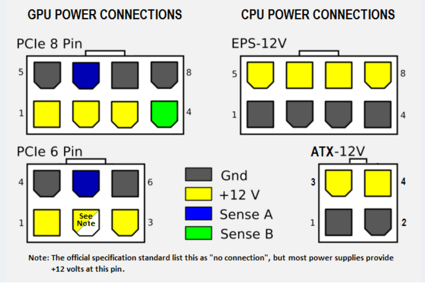
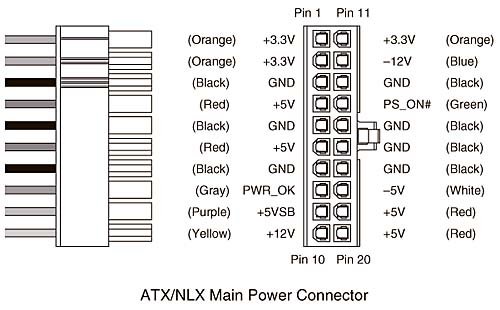
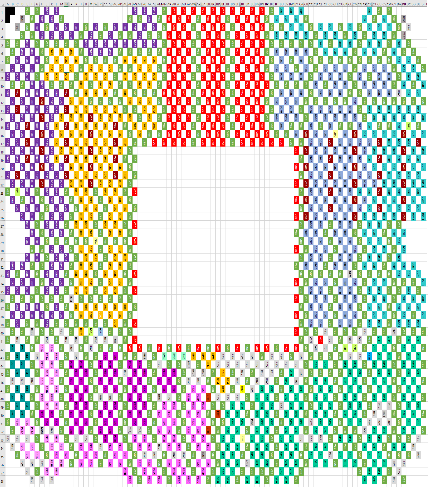

Asus X99 通病
前情提要
簡單來說，當時我正在讓服務器跑從遠端備份回來文件的哈希來驗證完整性，結果回頭一看服務器，發現就關機了。
症狀
此時CPU右上角的紅色LED亮起，按開機鍵都無反應，斷電重新上電紅色LED仍然點亮，這個時候我的第一猜測是可能是CPU過熱，也許讓他散熱一下就能好了。
在過一陣子重新上電後，紅色LED不亮了，現在按開機鍵則變成整台機器的LED瞬間閃爍一次，主板偵錯碼(Q-code)也是和LED一樣瞬間閃00後，之後按開機鍵也無任何反應，不過將電源供應器重新上電後又會有同樣的行為。
偵錯
在經過Google搜尋X99的這些症狀後，我最後定位到了一個可能的問題——華碩X99通病(MOS擊穿燒CPU)
檢測
那麼，對電腦的錯誤有了猜測，接下來就是檢測了
主機板

首先將三用電表打到測通檔(二極體檔)，量測CPU供電12V和電感下端
12V對電感下端短路，這邊就基本可以宣告CPU死定了，12V直衝CPU


同時12V也對地短路了
這也可以解釋為什麼之前開機一瞬間燈會閃一下，但之後按開機卻再也沒有反應，直到斷電重來。
主板在開機按下時短接PS_ON和GND，拉低PS_ON，電源啟動，輸出12V，但是CPU供電短路，電源供應器自動保護斷電，之後也不開啓，直到斷電重置。

現在知道主機板有短路後，就繼續排查哪裡出了問題，首先拆下供電散熱檢查底下的MOS

MOS的型號是0812ND，查看datasheet可以知道這是一顆集成上下管的IC。
需要量測的就是這顆IC裡的上下管正不正常。
首先量測上管，也就是1腳和2/3/4任一腳(Gate和Drain，圓點位置代表第一腳)，發現右數第三顆的阻值不對(左圖)，右圖則是正常的MOS應該有的讀值。


這代表第三顆MOS的上管擊穿了直接短路，Vphase(Source)在底下連到電感，12V直接導到CPU。
順便量測了所有的下管，結果都是正常。
理論上只要更換壞掉的MOS應該就能修好這塊主板，等之後有時間再來修。
CPU
雖然前面已經猜測這顆CPU死定了，不過不看到確切的結果還是不會認命
首先要找到2011-3腳位的定義，不過幸好已經有人幫我們畫出來了
Intel Socket 2011v3 Land Grid Layout. (Thanks sdgus68!) - computer hardware post - Imgur[5]
LGA2011-3 Land-Layout : r/intel[6]
我是使用第一份，我覺得那比較直觀
Imgur原文有提供下載連結，但是有一個已經失效了，可以從這裡觀看，或是在底下下載
core-i7-lga2011-3-tmsdg.pdf的52頁有針腳編號的定義
core-i7-lga2011-3-datasheet-vol-1的64頁開始有編號對應的用途

量測VCC和VSS的阻值，可以理解為供電和GND，發現短路，徹底給CPU判死刑
參考
- ASUS X99-DELUXE A-II Failed | TechPowerUp Forums ↩
- ASUS X99 A-II Code 00 (Not Listed) Red CPU Light On | Overclock.net ↩
- X99 A II will not POST!! : r/buildapc ↩
- Asus X99-A II suddenly shutdown and now giving Q code 00 | Tom’s Hardware Forum ↩
- Intel Socket 2011v3 Land Grid Layout. (Thanks sdgus68!) - computer hardware post - Imgur ↩
- LGA2011-3 Land-Layout : r/intel ↩